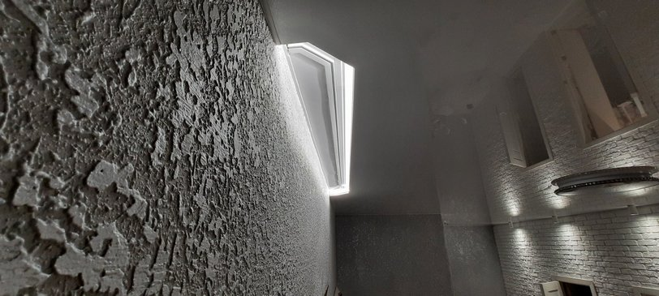

Натяжной потолок с скрытым карнизом в Киеве

Благодаря зазору между натяжным полотном и базовым потолком в натяжных потолках можно выполнять ниши. Это эффективный дизайнерский инструмент, который придаст изюминку интерьеру вашего помещения. В этой статье мы расскажем о нишах в натяжном потолке, которые предлагают специалисты нашей компании Nova Stelya.
Ниши под шторы

Они необходимы для того, чтобы спрятать за полотном карниз для штор и гардин. Зрительно будет казаться, что они будут выходить прямо из полотна. Получается стильно и оригинально.
Существует несколько вариантов создания таких ниш.
Вариант 1. Использование стандартного профиля.
Это наиболее трудоемкий вариант и наши специалисты его клиентам не предлагают. Суть его в том, что на базовом потолке в месте, где должен устанавливаться карниз, крепится брус. На него устанавливается обычный стеновой или потолочный алюминиевый профиль, к которому крепится натяжное полотно.
Лучше ставить клееный брус, чтобы его не повело при высыхании. Также мы рекомендуем крепить брус к потолку через закладные элементы, а не непосредственно саморезами.

При данной схеме со стороны ниши (например, если зайти на балкон) брус и профиль будут видны. Чтобы этого избежать, на брус к нижней части крепят специальный профиль, при помощи которого поворачивают полотно на 900 вверх и фиксируют стеновым профилем, прикрепленным сбоку бруса.

Вариант 2. Использование профиля БП 40
Чтобы не создавать такую громоздкую конструкцию (брус + стеновой профиль) можно использовать алюминиевый профиль БП 40 (размеры сечения 40 х 40 мм), который один все это заменяет. Для его крепления к базовому потолку используются специальные кронштейны. В этом случае монтаж получается значительно быстрее. Длина профиль 2,5 м. Если ниша должна быть длиннее, необходимо стыковать несколько профилей.

Вариант 3. Использование профиля ПК 5
Этот вариант является дальнейшим усовершенствованием варианта с БП 40. То есть к багету ПК 5 также можно присоединить с двух сторон на разных уровнях натяжное полотно. Но, кроме того, он имеет три направляющих для крючков для штор. То есть выполняет еще и функцию карниза. В этом случае нет необходимости в закладной для карниза. Монтаж ниши максимально упрощается. Длина багета 2,5 м.

Несколько рекомендаций по нишам под шторы
- Ширина ниши выбирается исходя из того, что штора/гардина не должна доходить до края ниши минимум на 4-5 см. реальный размер должен указать клиент, исходя из удобства замены гардин и штор.
- Длина ниши обычно равна длине стены помещения, на которой висит штора. Но, если окно небольших размеров и, соответственно, небольшой карниз, то длину ниши можно сделать по карнизу плюс необходимые зазоры. Но это увеличит ее стоимость, так как монтаж получается сложнее.
- Наши специалисты могут сделать нишу с криволинейным контуром. Для этого используют багет БП 40. В нем через 5 мм выполнены надрезы, благодаря которым его можно выгнуть в требуемую линию.
- Мы рекомендуем в нишах выполнять подсветку в виде нескольких точечных светодиодных светильников либо светодиодных лент. Получается очень зрелищно.
Более подробно о нишах для штор расскажут наши специалисты и порекомендуют для вас оптимальный вариант.
Ниши для светильников, передвижных перегородок и раздвижных дверей
Современный тренд для светильников в натяжных потолках – устанавливать их в нишах. Этот вариант обладает не только новизной дизайнерского решения, но и имеет несколько практических преимуществ:
- Простота обслуживания и замены светильников. Осветительный же прибор, установленный непосредственно в потолке, заменить другим, отличающимся габаритами и способом крепления, практически невозможно.
- Можно установить трековую систему освещения, благодаря которой светильник можно передвигать, меняя зоны освещения и внося новизну в интерьер.
Ниши для светильников выполняются при помощи алюминиевых профилей шириной 25 -80 мим и высотой 25-65 мм. К этим профилям можно с двух сторон стыковать натяжное полотно. Профиль крепится в нужном месте базового потолка. К нему подводятся электрические провода, в него устанавливают светильники. После чего натягивается полотно.
Кроме светильников такая ниша может использоваться для установки передвижных перегородок и раздвижных дверей. В них, в этом случае, устанавливают направляющие.
Преимущества компании Nova Stelya

Наши специалисты имеют большой опыт создания разнообразных ниш в натяжных потолках. С некоторыми нашими работами вы можете ознакомиться выше. Мы используем современные профили, благодаря которым заметно улучшается качество работ и сокращается время монтажа. С клиентами мы заключаем договор и предоставляем гарантию.
Помимо качества и оперативности своим клиентам мы гарантируем:
- установку только сертифицированных, экологически безопасных натяжных потолков от известных брендов;
- большое разнообразие полотен – по фактуре, цвету и т.д.;
- выгодные цены – просим ознакомиться с нашим прайсом.
Ответы на наиболее частые вопросы по нишам в натяжных потолках
🤗 Создание ниши для тканевого натяжного потолка такое же, как и для пленочного?
Технология та же. Отличаются лишь профиль.
🤗 В случае снятие штор с карниза, установленного в нише, есть ли риск повредить натяжное полотно? Как менять гардины в нише для штор?
Если ширина зазора достаточна для такой операции, то риска нет. Наши специалисты помогут вам определиться с нужной шириной. В случае тканевого потолка риск еще более уменьшается, так как ткань намного прочнее пленки.
🤗 Установка светодиодной ленты в нише для штор не представляет опасности с точки зрения возможности возникновения пожара?
Нет, мы ставим светодиодную ленту, которая не нагревается.
🤗 Возможно ли создание криволинейной ниши для светильников?
Да, это возможно. При помощи надрезов в П-образном профиле наши специалисты придадут ему нужную форму.
🤗 Сохранится ли герметичность натяжного потолка с нишей?
Вода может пройти через отверстия для крепления профиля к базовому потолку. Но лишь в том случае, если пролив будет непосредственно над профилем. В остальных случаях герметичность потолка будет такая же, как и у стандартного, без ниши.